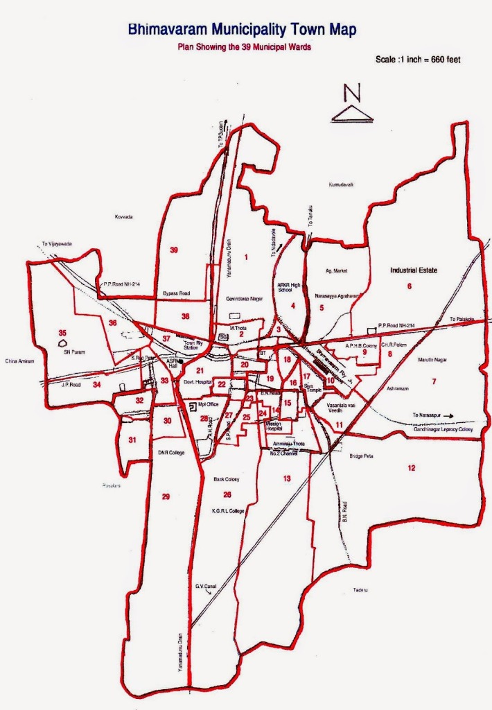

లైవ్ అలైన్మెంట్:
|
అక్షాంశం: 16.5442° N | రేఖాంశం: 81.5284° E
|
జూమ్: 14
|
స్కేల్: 1 అంగుళం = 660 అడుగులు (Town Map Plan)
↕️
వార్డు సమగ్ర వివరాల ప్యానెల్ (వర్టికల్ స్క్రోల్)
Scroll ⬇️
వార్డు 29
South West
డి.ఎన్.ఆర్. కాలేజీ & రాయలం సరిహద్దు
D.N.R. College & Rayalam Border
👥 అంచనా జనాభా:
9,240
🏠 నివాస గృహాలు:
2,290
🏛️ ఈ వార్డులోని ప్రధాన ల్యాండ్మార్క్లు:
డి.ఎన్.ఆర్. కళాశాల ప్రాంగణం (D.N.R. College Campus), ఆడిటోరియం, స్టేడియం, రాయలం రోడ్డు
🛣️ రహదారి వ్యవస్థ:
భీమవరం - దొంగపిండి రోడ్డు, డి.ఎన్.ఆర్. కాలేజీ రోడ్డు
🌊 కాలువ / మురుగు నీటి ప్రవాహం:
యలమదుర్రు డ్రెయిన్ (తూర్పు సరిహద్దు)
🛰️ APSAC జలాశయాల లేయర్ (ఈ వార్డు పరిధిలో):
📜 మున్సిపల్ పటం ప్రకారం సరిహద్దులు:
ఈ వార్డు మున్సిపల్ ప్లానింగ్ రికార్డుల ప్రకారం వార్డు సంఖ్య 29 గా నమోదు చేయబడింది. తూర్పున యలమదుర్రు డ్రెయిన్ వెంట, పశ్చిమాన రాయలం గ్రామ పంచాయతీ సరిహద్దు వరకు విస్తరించి ఉంది.
📑 స్కాన్ చేసిన పటంలో వార్డు స్థానం:

క్లిక్ చేసి సరిచూడండి
🏷️ మొత్తం 39 వార్డుల శీఘ్ర సూచిక:
ఎంచుకోవడానికి క్లిక్ చేయండి